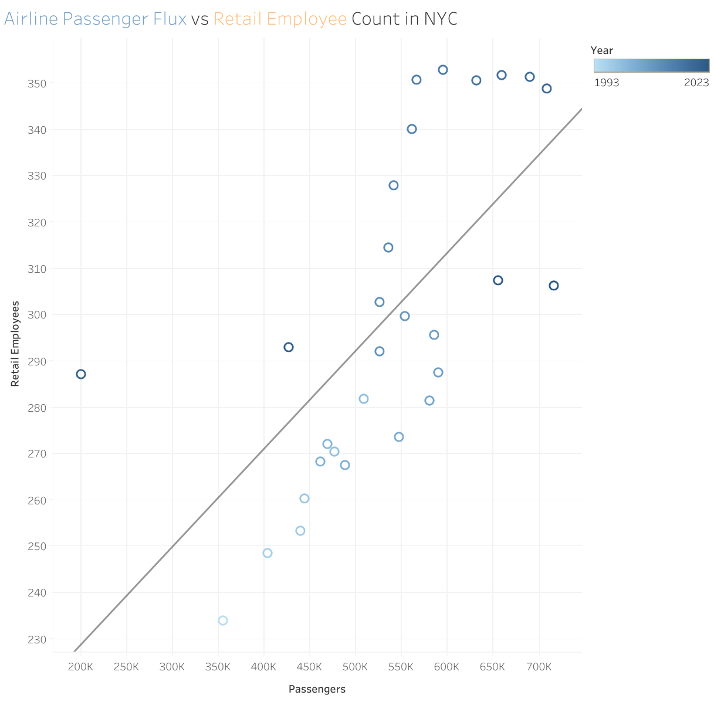

Draw a Circle
A small browser game: draw the roundest circle you can and get scored on it. Play →

Python, Pandas, NumPy, Scikit-learn, Tableau, Excel
A program that generates predictive insights for retail businesses from traffic data, built with a team of three developers. We cleaned and organized five datasets with over 600,000 total elements, fit a linear regression model with Scikit-learn, and produced data visualizations in Tableau. Presented to a panel of data scientists at the CDC Datathon, placing 5th out of over 200 competitors. GitHub →
Python, PyTorch, OpenCV, MediaPipe, Streamlit, Docker
A public web application that uses computer vision to perform real-time pose estimation for the purpose of improving study and work habits. It tracks eye and head positions to give users insight on their level of focus, and lets them import prerecorded videos for posture detection. GitHub →
A small browser game: draw the roundest circle you can and get scored on it. Play →
An interactive scrapbook made for an entomology course. Open →